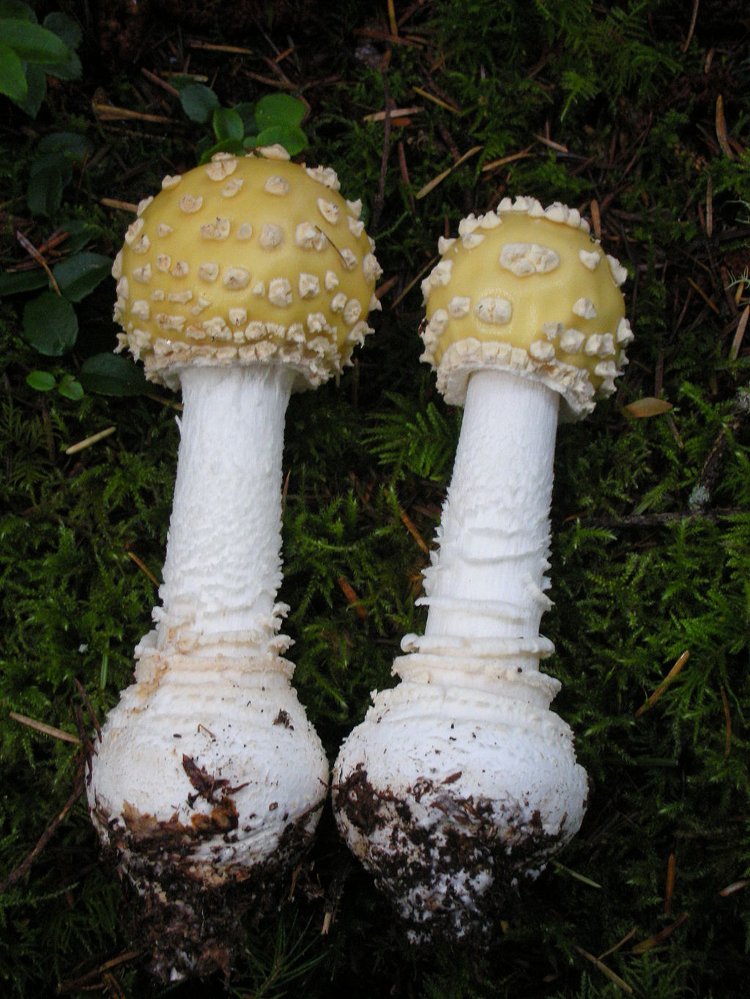

Amanita muscaria is the type species of the genus. By extension, it is also the type species of Amanita subgenus Amanita, as well as section Amanita within this subgenus. Amanita subgenus Amanita includes all Amanita with inamyloid spores. Amanita section Amanita includes the species with patchy universal veil remnants, including a volva that is reduced to a series of concentric rings, and the veil remnants on the cap to a series of patches or warts. Most species in this group also have a bulbous base. Amanita section Amanita consists of A. muscaria and its close relatives, including A. pantherina (the panther cap), A. gemmata, A. farinosa, and A. xanthocephala. Modern fungal taxonomists have classified Amanita muscaria and its allies this way based on gross morphology and spore inamyloidy. Two recent molecular phylogenetic studies have confirmed this classification as natural.
Controversy
Amanita muscaria varies considerably in its morphology, and many authorities recognize several subspecies or varieties within the species. In The Agaricales in Modern Taxonomy, German mycologist Rolf Singer listed three subspecies, though without description: A. muscaria ssp. muscaria, A. muscaria ssp. americana, and A. muscaria ssp. flavivolvata. However, a 2006 molecular phylogenetic study of different regional populations of A. muscaria by mycologist József Geml and colleagues found three distinct clades within this species representing, roughly, Eurasian, Eurasian "subalpine", and North American populations. Specimens belonging to all three clades have been found in Alaska; this has led to the hypothesis that this was the centre of diversification for this species. The study also looked at four named varieties of the species: var. alba, var. flavivolvata, var. formosa (including var. guessowii), and var. regalis from both areas. All four varieties were found within both the Eurasian and North American clades, evidence that these morphological forms are polymorphisms rather than distinct subspecies or varieties. Further molecular study by Geml and colleagues published in 2008 show that these three genetic groups, plus a fourth associated with oak–hickory–pine forest in the southeastern United States and two more on Santa Cruz Island in California, are delineated from each other enough genetically to be considered separate species. Thus A. muscaria as it stands currently is, evidently, a species complex. The complex also includes at least three other closely related taxa that are currently regarded as species: A. breckonii is a buff-capped mushroom associated with conifers from the Pacific Northwest, and the brown-capped A. gioiosa and A. heterochroma from the Mediterranean Basin and from Sardinia respectively. Both of these last two are found with Eucalyptus and Cistus trees, and it is unclear whether they are native or introduced from Australia. Amanitaceae.org lists four varieties as of May 2019, but says that they will be segregated into their own taxa "in the near future".
